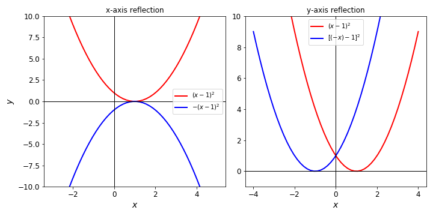

02 - Describing shapes and patterns
Contents
02 - Describing shapes and patterns¶
Measuring angles¶
An angle is a primitive geometrical element, such as the point, the curve or the plane. It is defined as the figure formed by two line segments that extend from a common point.
The two most common units for measuring angles are the degree and the radian.

If we divide a full rotation by 360 equal parts, each of these parts is called a degree (noted as \(1^{\circ}\)). Thus, the degree corresponds to \(1/360\) of one full rotation. Each degree can also be divided in 60 equal parts called minutes (\(1^{\circ} = 60'\)) and each minute further divided in 60 seconds (\(1' = 60''\)).

One radian is the angle comprised in a circunference when the size of the arc is equal to the radius of the circunference. If \(C\) is the size of the arc and \(R\) the radius of the circunference, the corresponding angle in radians \(\phi\) will be given by:
Thus, if we are considering the arc for the full circunference, \(C = 2\pi R\), and we will have:
and the angle for a full rotation corresponds to \(2\pi\) radians.
Tip
When the angle is written in radians, the unit (radians or rad) is frequently omitted.
For a given angle, transforming between units of degrees and radians can be simply done with:
where \(\theta\) is the angle measured in degrees and \(\phi\), measured in radians. In this lecture, we will consider the angles measured in radians (independent of the symbol used for the variable), unless stated otherwise.
Example
If \(\theta = 90^{\circ}\), then using the previous expression we have \(\phi = \displaystyle\frac{\pi}{2}\). Since \(\theta\) and $\phi are directly proportional, we also have:
Trigonometric circle¶
We obtain the trigonometric circle by superimposing a circle of radius \(1\) to the cartesian system of coordinates:

The projections on the \(x\) and \(y\)-axes have special meanings, if we consider the angle \(\theta\) between the line segment in the radial direction and the \(x\)-axis.
From the geometric relations on the right triangle (triangle in which one internal angle is a right angle):
The larger side of the triangle, opposing the right angle, is called hypothenuse, while the other two smaller side are called catheti. We define the sine and cosine of the angle \(\alpha\) as the ratios of the opposing and adjacent catheti, respectively, with the hypothenuse:
Back to the trigonometric circle, it is possible to construct a right triangle where the hypothenuse corresponds to the radius of the superimposed circle. In this case, since this radius equals to \(1\), we have:
In other words, the projections of the end of the radial line segment on the \(y\) and \(x\)-axes correspond to the sine and cosine of the angle \(\theta\). Sine and cosine for this angle can be obtained by the projections even if \(\theta > \displaystyle\frac{\pi}{2}\).
Trigonometric identities¶
With the aid of the projections on the trigonometric circle, some trigonometric identities become imediately clear. Consider \(\theta > 0\) for counterclockwise angle measurements starting from the \(x\)-axis and \(\theta < 0\) for clockwise measurements. We have:
From the fact that a full rotation brings you back to the same point:
or from Pythagoras’ theorem on the right triangle in the trigonometric circle:
Tip
The notation \(\mbox{sin}^2(\theta)\) is frequently used to express the square of \(\mbox{sin}(\theta)\), or:
which is different from \(\mbox{sin}(\theta^2)\).
Now watch this video for a different application of the same trigonometric construct.
Trigonometric functions¶
Since sine and cosine are defined for any real value of a given angle \(x\) (\(x \in {\rm I\!R}\)), we can define the functions:
Thus, the association of sine and cosine with pure geometric ratios gives place for a more generic definition of functions of real variables. The graphs of these functions are given by:

All the other known trigonometric relations can also be defined as functions in a similar way. Take for example the tangent of an angle \(\theta\), which is:
If \(x \in {\rm I\!R}\), than we can define a function
The graph from the tangent function will be given by:

Note by the above graphs that the functions sine and cosine have patterns that repeat themselves every interval of \(2\pi\), while the tangent repeats itself every interval of \(\pi\). We say that these three functions are periodic.
A function \(f(x)\) is periodic if there is a positive constant \(a\), so that:
for all values of \(x\) for which the function f(x) is defined.
If \(a\) is the smallest number with this property, we call it the period of f(x).
Example
Since \(\mbox{sin}(x + 2\pi) = \mbox{sin}(x)\) for any value of \(x\) and since \(2\pi\) is the smallest number for which this property holds, then sine is a periodic function with period \(2\pi\). With the same reasoning, it can be shown that the tangent is periodic with period \(\pi\).
Example
Many natural processes can be modelled as periodic. Think for example of a pendulum, the tides, the seasons. Often periodicity can be a good first order approximation, even if it does not strictly hold. For example when describimg the shape of the cloud cover in the picture below.

Amplitude and Period¶
From the basic functions \(\mbox{sin}(x)\) or \(\mbox{cos}(x)\) we can write a more general function \(f(x)\) given by
Since the sine ranges from \(-1\) to \(1\) (see the graph for \(sin(x)\) for reference), by its definition, \(f(x)\) will range from \(-A\) to \(A\). We call \(A\) the amplitude of \(f(x)\) and it gives the extent of the variation of the oscillation of the function.
Being sine a periodic function, \(f(x)\) will also be, possibly with a different period. The period \(T\) of \(f(x)\), as discussed before, will be determined by the equation \(f(x + T) = f(x)\), that should be valid for every \(x\). Thus:
But since we know that sine is periodic with period \(2\pi\), we should have \(|\omega|T = 2\pi\). Thus, the period of the function \(f(x)\) will be:
The constant \(\omega = \displaystyle\frac{2\pi}{T}\) is called angular frequency and measures the number of full rotations the function \(f(x)\) oscillates in one interval of \(T\).
Example
The function \(f(x) = 3.6\, \mbox{cos}\left(\displaystyle\frac{\pi}{3}x\right)\) has an amplitude \(A=3.6\), an angular frequency \(\omega = \displaystyle\frac{\pi}{3}\), and a period \(T = \displaystyle\frac{2\pi}{\omega} = \displaystyle\frac{2 \pi}{\frac{\pi}{3}} = 6\).
Transformation on graphs¶
Starting from the elementary functions we have discussed
we can introduce several transformations to obtain new functions, by adding or multiplying constants to the argument (function variable) or to the whole function. These are the simplest cases of what is know as function composition with the resulting function called composite function.
When working with mathematical models, this will help you to understand how the shape of a given function might change by changing one of the parameters, or how to construct a set of functions (that might be useful for your particular model) with small modifications of basic functions.
Translations¶
A given function can be dislocated, either vertically or horiontally, by adding a constant \(c\) to the whole function or to its argument. In general, starting from a function \(f(x)\), translations are built following the rules:
Horizontal (Constant \(c\) summed to the argument of the function)
\(y = f(x + c)\ \ \ \ - \left\{ \begin{array}{ll} c > 0 & \rightarrow \ \ \mbox{function moves to the left} \\ c < 0 & \rightarrow \ \ \mbox{function moves to the right} \\ \end{array} \right. \)
Vertical (Constant \(c\) summed to the whole function)
\(y = f(x) + c\ \ \ \ - \left\{ \begin{array}{ll} c > 0 & \rightarrow \ \ \mbox{function moves up} \\ c < 0 & \rightarrow \ \ \mbox{function moves down} \\ \end{array} \right. \)
Example
If we start with the function \(f(x) = x^3\), the function \(y = f(x + 2) = (x+2)^3\) will represent a horizontal translation, while the function \(y = f(x) + 2 = x^3+2\) will represent a vertical translation.
To see how this works, try to implement the following code in your own jupyter notebook. Try to use different functions \(f(x)\) (defined in ‘func(x)’) to see how different graphs behave to horizontal and vertical translations.
from ipywidgets import interact
import matplotlib.pyplot as plt
import numpy as np
def func(x):
return x**3
def htrans(c):
x = np.linspace(-3,3)
y = func(x+c) #constant c in the argument of the function
plt.plot(x,y, label='$f(x+c)$')
plt.title('Horizontal translation')
plt.legend(fontsize=12)
plt.ylim(-8, 8) #remember to change the limits for better visualisation if necessary
plt.axhline(0, color='black', lw=1)
plt.axvline(0, color='black', lw=1)
plt.show()
def vtrans(c):
x = np.linspace(-3,3)
y = func(x)+c #constant c summing the whole function
plt.plot(x,y, label='$f(x)+c$')
plt.title('Vertical translation')
plt.xlabel('x')
plt.ylabel('y')
plt.legend(fontsize=12)
plt.ylim(-8, 8) #remember to change the limits for better visualisation if necessary
plt.axhline(0, color='black', lw=1)
plt.axvline(0, color='black', lw=1)
plt.show()
# create a slider
interact(htrans, c=(-2.0,2.0))
interact(vtrans, c=(-2.0,2.0))
Stretching/ Compression¶
A given function can also be stretched or compressed, either vertically or horiontally, by multiplying a constant \(c\) to the whole function or to its argument. Starting from a function \(f(x)\), stretchings/compressions are built following the rules:
Horizontal (Constant \(c\) multiplied to the argument of the function)
\(y = f(cx)\ \ \ \ - \left\{ \begin{array}{ll} c > 1 & \rightarrow \ \ \mbox{function is horizontally compressed} \\ 0 < c < 1 & \rightarrow \ \ \mbox{function is horizontally stretched} \\ \end{array} \right. \)
Vertical (Constant \(c\) multiplied to the whole function)
\(y = cf(x)\ \ \ \ - \left\{ \begin{array}{ll} c > 1 & \rightarrow \ \ \mbox{function is vertically stretched} \\ 0 < c < 1 & \rightarrow \ \ \mbox{function is vertically compressed} \\ \end{array} \right. \)
Example
For the function \(f(x) = x^3-2x\), the function \(y = f(2x) = (2x)^3-2(2x) = 8x^3-4x\) will represent a horizontal compression, while the function \(y = 2f(x) = 2x^3 - 4x\) will represent a vertical stretching.
Example
One example where we stretch or compress functions comes from chemical processes. Many chemical processes happen faster when the temperature is higher. If we describe the concentration of a certain chemical as a function of time \(c(t)\), increasing the temperature will lead to a horizontal compression of the function.
Now play with the code below to see how different graphs behave to horizontal and vertical stretching/compression.
from ipywidgets import interact
import matplotlib.pyplot as plt
import numpy as np
def func(x):
return x**3-2*x
def hstetcom(c):
x = np.linspace(-3,3)
y = func(c*x) #constant c multiplying the argument of the function
plt.plot(x,y, label='$f\, (cx)$')
plt.title('Horizontal stretching/compression')
plt.xlabel('x')
plt.ylabel('y')
plt.legend(fontsize=12)
plt.ylim(-4, 4) #remember to change the limits for better visualisation if necessary
plt.axhline(0, color='black', lw=1)
plt.axvline(0, color='black', lw=1)
plt.show()
def vstetcom(c):
x = np.linspace(-3,3)
y = c*func(x) #constant c multiplying the whole function
plt.plot(x,y, label='$c\, f\, (x)$')
plt.title('Vertical stretching/compression')
plt.xlabel('x')
plt.ylabel('y')
plt.legend(fontsize=12)
plt.ylim(-4, 4) #remember to change the limits for better visualisation if necessary
plt.axhline(0, color='black', lw=1)
plt.axvline(0, color='black', lw=1)
plt.show()
# create a slider
interact(hstetcom, c=(0.1,3.0))
interact(vstetcom, c=(0.1,3.0))
Reflection¶
If the constant \(c\) multiplying the whole function or its argument has the particular value \(c = -1\), we will have a reflection. Reflections can be done in relation to the \(x\) or \(y\)-axes and they are built, starting from a function \(f(x)\), following the rules:
About the x-axis - \(y = -f(x)\)
About the y-axis - \(y = f(-x)\)
The figure below shows these two reflections using the function \(f(x) = (x-1)^2\).
